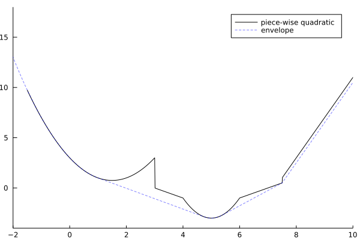

PiecewiseQuadratics.jl
PiecewiseQuadratics.jl is a Julia package for manipulation of univariate piecewise quadratic functions of the form
\[f(x) = p x^2 + q x + r, ∀ x ∈ [lb, ub]\]
where:
p,q,rare scalarxis the decision variablelbis the lower bound ofxubis the upper bound ofx
Contents
Installation
Use Julia's builtin package manager Pkg to install. From a Julia REPL:
] add PiecewiseQuadraticsExample
We specify a piecewise quadratic function by providing a list of bounded quadratics in order. Where the pieces overlap, we take the function value to be the minimum over all possible values.
We specify
\[f(x) = \left\{\begin{array}{ll} x^2 - 3x - 3 & \text{if } x \in [-\infty, 3]\\ -x + 3 & \text{if } x \in [3, 4]\\ 2x^2 - 20x + 47 & \text{if } x \in [4, 6]\\ x - 7 & \text{if } x \in [6, 7.5]\\ 4x - 29 & \text{if } x \in [7.5, \infty]\\ \end{array}\right.\]
as follows:
using PiecewiseQuadratics
f = PiecewiseQuadratic([
# BoundedQuadratic(lb, ub, p, q, r),
BoundedQuadratic(-Inf, 3.0, 1.0, -3.0, 3.0),
BoundedQuadratic(3.0, 4.0, 0.0, -1.0, 3.0),
BoundedQuadratic(4.0, 6.0, 2.0, -20.0, 47.0),
BoundedQuadratic(6.0, 7.5, 0.0, 1.0, -7.0),
BoundedQuadratic(7.5, Inf, 0.0, 4.0, -29.0)
])Piecewise quadratic function: BoundedQuadratic: f(x) = 1.00000 x² - 3.00000 x + 3.00000, ∀x ∈ [-Inf, 3.00000] BoundedQuadratic: f(x) = - 1.00000 x + 3.00000, ∀x ∈ [3.00000, 4.00000] BoundedQuadratic: f(x) = 2.00000 x² - 20.00000 x + 47.00000, ∀x ∈ [4.00000, 6.00000] BoundedQuadratic: f(x) = + 1.00000 x - 7.00000, ∀x ∈ [6.00000, 7.50000] BoundedQuadratic: f(x) = + 4.00000 x - 29.00000, ∀x ∈ [7.50000, Inf]
We can visualize the function using get_plot and any common plotting library.
using Plots
plot(get_plot(f); grid=false, color=:black, label="piece-wise quadratic")
plot!(get_plot(simplify(envelope(f))); linestyle=:dash, color=:blue, la=0.5, label="envelope", xlims = (-2, 10), ylims = (-4, 18))qt.qpa.xcb: could not connect to display qt.qpa.plugin: Could not load the Qt platform plugin "xcb" in "" even though it was found. This application failed to start because no Qt platform plugin could be initialized. Reinstalling the application may fix this problem. Available platform plugins are: linuxfb, minimal, offscreen, vnc, xcb. Aborted (core dumped) connect: Connection refused GKS: can't connect to GKS socket application GKS: Open failed in routine OPEN_WS GKS: GKS not in proper state. GKS must be either in the state WSOP or WSAC in routine ACTIVATE_WS

Authors
This package and LCSO.jl were originally developed by Nicholas Moehle, Ellis Brown, and Mykel Kochenderfer at BlackRock AI Labs. They were developed to produce the results in the following paper: arXiv:2103.05455.